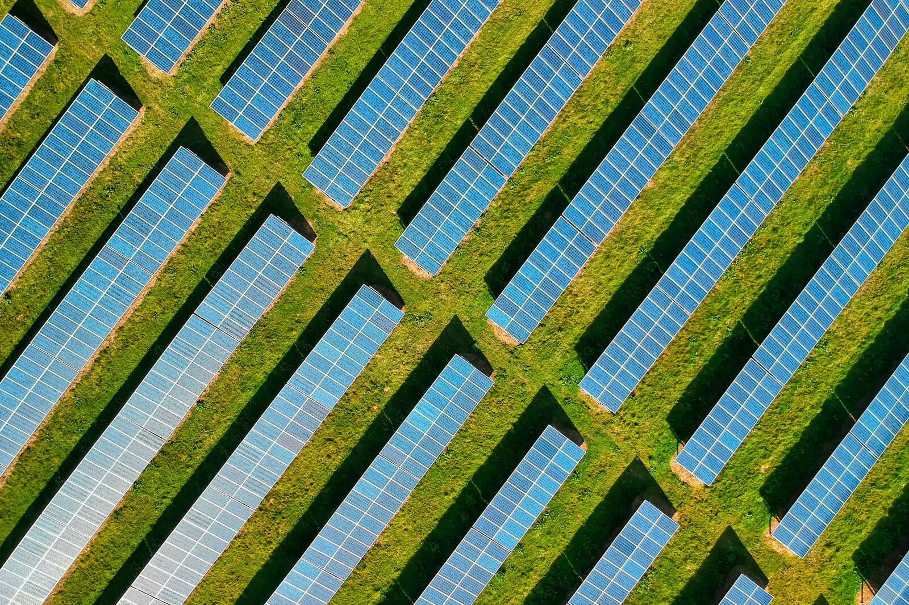

Fire, fuel load and robots: the honest conversation
Autonomous mower fire safety on a solar farm: no spark detection. Risk is managed with no-go zones, charger siting and no charging on fire ban days.

Are autonomous mowers a fire risk on a solar farm?
The machine has no spark or fire detection, so the risk is managed operationally, not by sensing. Gravel and rocky margins are mapped as no-go zones, the charger sits on hardstand clear of arrays, and there's no charging on total fire ban days.
If you manage solar ground, fire is not an abstract risk. Grass fires on solar farms happen, and the usual ignition story is mundane: a mower blade striking gravel or rock on a hot dry day.
So here is the honest position on autonomous mowers and fire, stated the way we state it to clients.
First, the machine does not detect fire. There is no spark sensor on the deck and we do not pretend otherwise. What an autonomous machine does better than any human operator is go exactly where it is told, every time. Gravel margins, rocky patches and high risk zones get mapped as no-go areas during setup, and the machine simply never mows them. Blade strike risk is managed by routing, not by wishful sensing. The risky edges stay with a person who can see the ground.
Second, the battery is a separate conversation, and it deserves its own controls. Charging is the highest risk window for any lithium machine, so the charge point belongs on hardstand, well clear of arrays and switchrooms, with a non-combustible radius. No charging on total fire ban days, the machine parks instead. And any battery pack that has copped an impact, a bogging or a water event sits in quarantine on hardstand for 48 hours before it goes near a charger, because damaged packs fail later, not immediately.
Third, the fuel load argument runs the other way too. The biggest fire input on a solar site is long dry grass under the asset. A machine that cuts continuously, all year, without depending on whoever has a spare afternoon, is itself fire mitigation.
None of this is complicated. It is just written down, which on most sites the fire plan for the mower is not.
Common questions
Does the autonomous mower detect sparks or fire?
No. There's no spark sensor on the deck and we don't pretend otherwise. Fire risk is handled by where the machine is allowed to go and how the battery is managed.
How do you stop blade strikes on gravel and rock?
By routing, not sensing. Gravel margins, rocky patches and high risk zones get mapped as no-go areas during setup and the machine never mows them. Those edges stay with a person who can see the ground.
Where should the charger go on a solar site?
On hardstand, well clear of arrays and switchrooms, with a non-combustible radius around it. Charging is the highest risk window for any lithium machine, so the siting matters more than anything else.
What happens on a total fire ban day?
No charging. The machine parks. Any battery pack that has copped an impact, a bogging or a water event also sits in quarantine on hardstand for 48 hours before it goes near a charger.
Does continuous mowing lower fire risk on a solar farm?
The biggest fire input on a solar site is long dry grass under the asset. A machine that cuts all year, without waiting for someone's spare afternoon, keeps that fuel load down. Certification for the machine is still in progress, so we don't claim more than that.
Read next
- Solar farm vegetation management with autonomous mowing
- The biggest line item nobody budgets
- Solar Farm Vegetation Management with Autonomous Mowers
AutoAcre is an autonomous mowing operator based in the Northern Rivers, NSW, focused on solar-farm and commercial vegetation management. ben@autoacre.com.au